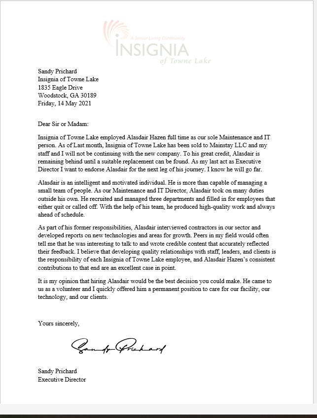

Insignia of Towne Lake
Title: IT & MAINTENANCE ENGINEER (TEMPORARY)Employed From: 14 November 2017 - 30 December 2021
Supervisor: Sandy Prichard
Address: 1835 Eagle Drive, Woodstock GA 30189
Phone: 770*592*4242
_____________________________________________

Duties Included (but not limited to):
- Technical Support (L1-L2)
- Installing new and replacement hardware for end-user.
- Installing new software and verifying that systems are functioning correctly.
- Installing updates/patches and verifying that systems are functioning correctly.
- Creating and Maintaining documentation and Provide training to end users.
- Working with end users to diagnose and resolve problems.
- Determining steps to be taken in order to correct problems.
- Provide customer service with patience and respect to achieve total customer satisfaction.
- Maintaining records of all calls and solutions performed.
- Provided guidance to management regarding project bids for onsite improvements.
- Developed and implemented operations and maintenance policies.
- Supervised and conducted daily operations, including employee performance, preventive maintenance and safety.
- Directed bidding and selection processes to find external contractors for special projects.
- Sourced outside contractors for special projects and oversaw bidding and selection processes.
- Established clear procedures for handling repairs, planning maintenance and completing building updates.
- Performed employee performance evaluation
- Monitored building systems and directed preventive maintenance.
- Contributed to development, implementation and execution of maintenance programs.
- Supervised safety, prevention and fire protection programs.
- Maintained daily facility operations.
- Contacted vendors to procure equipment and tools to meet organizational demand.
- Collected data to compile detailed reports for upper management and closely monitored equipment, tools, and system upgrades.
- Delivered positive reinforcement and constructive criticism for employee work efforts.
- Inspected completed work of employees and contractors to assess quality issues.
- Maintained clear and safe workspace areas to meet OSHA standards.
- Analyzed and identified equipment failure root causes and initiated corrective actions.
- Diagnosed equipment malfunctions and completed repairs to restore equipment and maintain uptime.